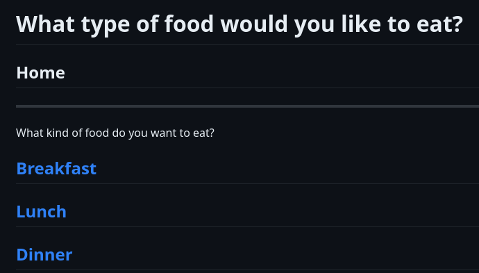
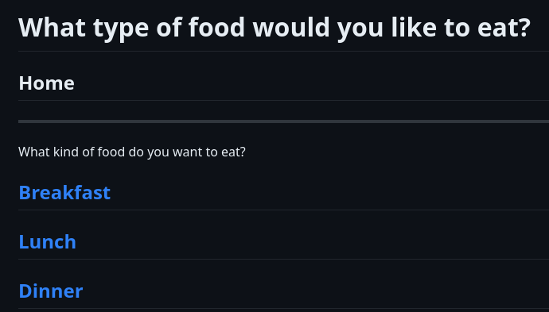

cyoa.html project
Cooking Food made by Caron Voon, Vanessa Archer, Kiara Matamoros
Our adventure is about choosing what you want to eat thoughout the day. The player can pick the kind of food that they want to eat. However, based on the choices that the player makes their will be some rewards or some consequence.
Making this project was kind of hard to do because since it was group work we had to git push / git pull a lot of the times. Also, it was kind of hard because we only had school time to work on this project together and when it was afterschool we had to find a way to communicate with each other. As well the coding part. That was hard to do because sometimes one or all of our codes wouldn't work and we all had to figure out what was the issue.
Even though there were challenges it helped me learned and practice somethings. I was able to practice on my communication skills with my classmates more and I was able to practice more on my git push / git pulls. However, while working with my classmates on this project I was able to learn or relearn somethings. To the help of Caron I was able to understand things, in order to do this project. She helped me understand how to do the md. She also taught me how to write a code, this code was to help the player click onto the next adventure / the next choice.
Now that this project is over, the step next that I want to do is to reflect and to over view the things that I did with this project. I want to reflect and to see if I need to improve on some things and I want to look over my codes and try to understand them more.
Github link to the cyoa projectscyoa.html projects
Github Portfolio
 
